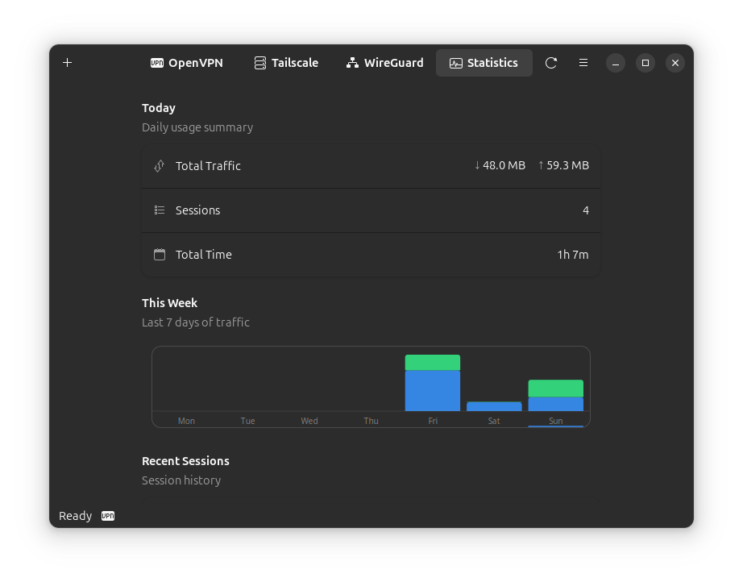

Kill Switch
Boot-persistent protection with state persistence and crash recovery. Blocks all traffic if VPN fails.

Real-time bandwidth graphs, session history, and weekly traffic charts. Unique to VPN Manager.
Boot-persistent protection with crash recovery. LAN access toggle and captive portal pause mode.
GTK4 + libadwaita for a beautiful, responsive experience. Follows GNOME HIG guidelines.
OpenVPN, WireGuard, and Tailscale support. GUI, CLI, and TUI interfaces included.
Enterprise features without the enterprise complexity. Built for Linux users who value both security and simplicity.
Boot-persistent protection with state persistence and crash recovery. Blocks all traffic if VPN fails.
systemd-resolved strict mode with firewall fallback ensures your DNS queries stay private.
Extended sysctl parameters and nftables inet rules prevent IPv6 traffic leaks.
Warns if a known network appears with a different access point. Protects against spoofing attacks.
Auto-manage VPN based on network trust. Connect on untrusted WiFi, disconnect at home.
Automatic connection restoration when network drops. Never lose your VPN protection.
Quick access without opening the app. Right-click for instant trust/untrust actions.
Choose what traffic goes through VPN. Run specific apps outside the tunnel.
Modern GTK4 + libadwaita interface. Dark/light theme support, responsive design.
Full control from terminal. JSON output for scripting. Perfect for automation.
Rich dashboard with bandwidth sparklines, health gauge, and fuzzy profile search.
Import .ovpn files easily. Credentials stored securely in system keyring.
Choose your distribution and follow the simple installation steps.
# Loading install command...Supported: Ubuntu 24.04+, Debian 12+
# Loading install command...Supported: Fedora 40+, RHEL 9+
# Loading install command...
Requires: sudo pacman -S gtk4 libadwaita
# Requirements: Go 1.21+, GTK4 4.14+, libadwaita 1.5+
# Clone and build
git clone https://github.com/yllada/vpn-manager.git
cd vpn-manager
go build -o vpn-manager .
# Install system-wide (optional)
sudo cp vpn-manager /usr/local/bin/
sudo cp assets/vpn-manager.desktop /usr/share/applications/
# Run
./vpn-managerVPN Manager is free, open source, and built with love for the Linux community. Join us!
Show your support and help others discover VPN Manager
Submit PRs, fix bugs, or add new features
Found a bug? Let us know and we'll fix it
Want to support development?
Sponsor on GitHub